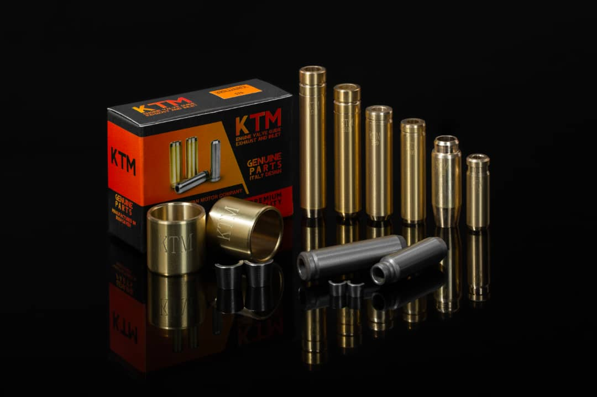
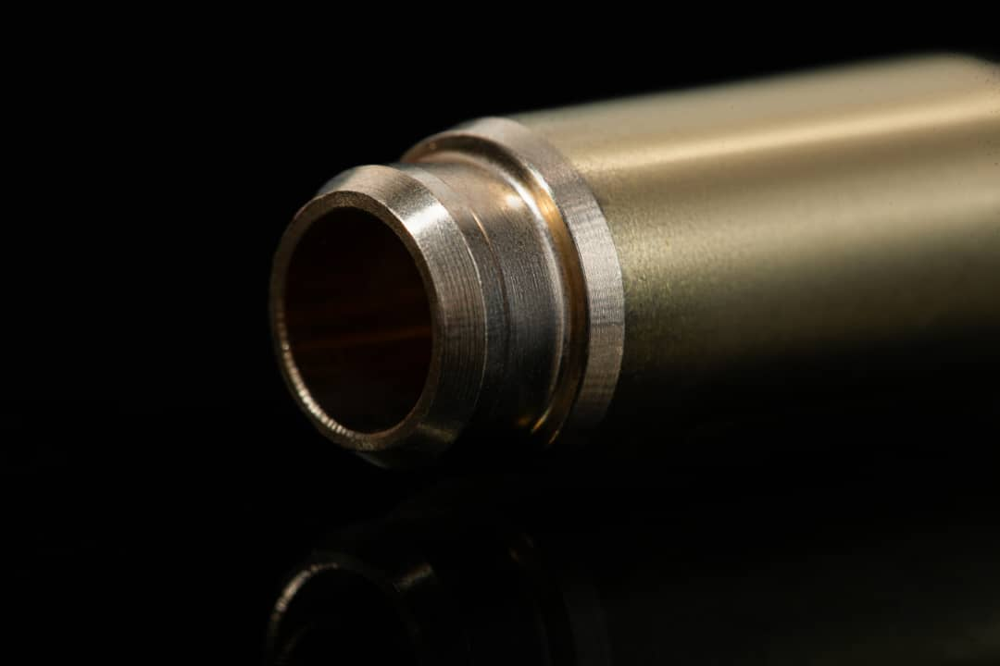

تخصص در قلب موتور
قطعات کوچک.
نقشی بزرگ
در حرکت.
راهنما و نشیمنگاه سوپاپ کوشا توان موتور؛ حاصل تمرکز بر ساخت دقیق، انتخاب آلیاژ و جزئیاتی که در عملکرد موتور تفاوت میسازند.

مجموعه محصولات کوشا توان موتورTHE KTM COLLECTION / 01
01 /تولید تخصصی قطعات موتور
02 /بررسی سفارش مطابق نقشه فنی
03 /همراه بازار قطعات یدکی و صنعت
مجموعه محصولات
ساختهشده برای یک وظیفه دقیق.

دقت، در جزئیات معنا پیدا میکند.درباره کوشا توان موتور
تمرکز ما،
جزئیات حرکت است.
کوشا توان موتور با تمرکز بر تولید راهنما و نشیمنگاه سوپاپ، در حوزه قطعات موتور فعالیت میکند. از هندسه قطعه تا پرداخت سطح، هر جزئیات بخشی از یک عملکرد هماهنگ است.
برای انتخاب قطعه، نوع موتور و مشخصات فنی نقطه آغاز گفتوگو با ماست.
بیشتر درباره مااز نیاز تا قطعه
مسیر یک سفارش روشن است.
01
بررسی نیاز
نوع موتور، کاربرد و تعداد قطعات مورد نیاز مشخص میشود.
02
تطبیق مشخصات
ابعاد، جنس و نقشه یا نمونه قطعه بررسی میشود.
03
توافق تولید
مشخصات نهایی، قیمت و زمان تحویل هماهنگ میشود.
04
آمادهسازی سفارش
قطعات مطابق توافق برای تحویل آماده میشوند.
قطعه مناسب، از یک گفتوگوی دقیق شروع میشود.
برای بررسی محصول یا تولید مطابق نقشه، مشخصات مورد نیازتان را آماده کنید.